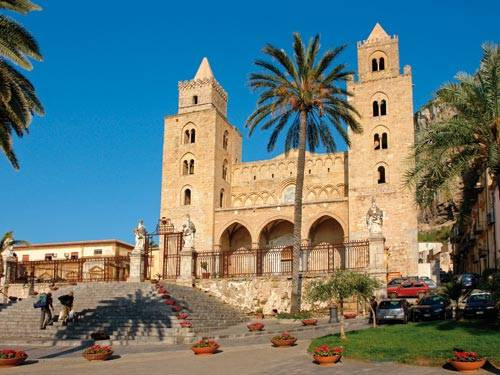

Rondreis Italië
"In het hart van de Middellandse Zee vindt u Sicilië, het zuidelijke Italiaanse eiland waar van alles te ontdekken valt. Dankzij de centrale en dus strategische ligging heeft de geschiedenis vele sporen en monumenten achtergelaten uit tijden dat volkeren als de Grieken, Vandalen, Byzantijnen en Arabieren de macht over het eiland probeerden te verwerven. Romeinse tempels worden dan ook afgewisseld met Normandische kerken, die zelf vervolgens gebroederlijk naast indrukwekkende paleizen staan uit bijvoorbeeld de barok.Wakend oog van al dit stedenschoon blijft de machtige Etna, de nog immer actieve en altijd rokende vulkaan die tot de actiefste ter wereld behoort. Op het eiland dat zo’n driekwart van de oppervlakte van Nederland beslaat, vindt u ook een afwisselend landschap, van heuvelachtige met koren bedekte heuvels tot ruige bergstreken en lange zandstranden. Natuurlijk schijnt het Siciliaanse zonnetje uitbundig, het lijkt hier wel altijd lente! Of, zoals wijsgeer Cicero reeds zei: Sicilië kent geen dag zonder zon.
Wilt u meer lezen, klik dan hier!